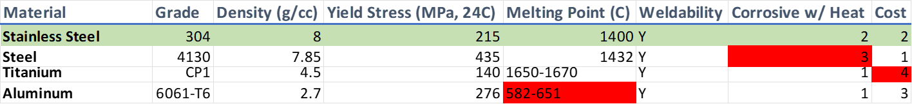

Exhaust
- Goals for Exhaust:
- Rules CompliancePass sound test at idle and ¾ engine speedMeet mounting requirementsManufacturabilityReduce potential leak pointsReduce time spent weldingWeight MinimizationMinimize part size while retaining strength requirementsPower OutputDesign primary length to maintain power output from previous systemReduce backpressure as much as possible
The current objective for the powerplant system is to improve the engine output in the range of 8000-11000 RPM due to the current engine gearing and driver habits.
Parts Overview
Exhaust Manifold
Primaries
Thermocouples
Collector
Secondary
Lambda Sensor(s)
Muffler
Overview
Material Selection
- Factors to consider:
- - Low-carbon steel is marginally lighter than stainless by density, but is susceptive to corrosion at high temperatures- Aluminum is much lighter than stainless, but will not hold up to exhaust temperatures (~1300º F)- Titanium is half as light as stainless, but twice as expensive
Primary Runners
Goals for Primaries
Manufactured product that matches CAD
No leaking from welds and NPT fittings
Weight stays within 15% of CR21 if muffler can be placed in the center of the car below the engine. If not, decrease system weight by 10%.
Analysis on GT-Suite comparing different lengths
Pressure Wave Tuning
Used to determine ideal primary length for a given reflective value
- Assumptions
No change in exhaust temperature Full amplitude wave reflection at collector
Primary length:
Speed of sound:
Design Choice
Achieves reflective value of 4 for 9000 rpm peak given packaging restraints with a goal of 11.63”
Effective Cam Duration

Primary Geometry
Mounting Solution
- Individual mounting flanges
- - 19% Total Weight Reduction- Eliminates 16hrs manufacturing time by eliminating need to sand primaries to fit flush with engine
Collector
Welded vs. Slipfit Collector
- Welded
Not removable Requires welds to seal Open volume for primaries to dump into 1.5†collector diameter
- Slipfit
Removable Seals by thermal expansion Requires springs to retain Merge bullet 2†collector diameter
Secondary Runners
Secondary Runner theory
Steady state, incompressible flow analysis
- Assumptions
Constant temperature across secondary Incompressible Constant mass flow rate
Principles used:
Fluid Energy Equation:
Law of Conservation of Mass:
Secondary Runner Design
- CR20:
Tapers from 1.5†v-band to 2†secondary Muffler mounted via bolted flange
- CR21:
Eliminates taper Muffler mounted via v-band O2 sensor positioning must be considered Calculated reduced backpressure by 3.37kPa (72%)
Muffler
Goals for Muffler
- Pass sound
Idle@ 103 dbc 11000@ 110 dbc
- Back Pressure
Utilize a combination of perforated tubes, packing, and chambers to ensure a smooth flow path for exhaust gasses. Do not put exhaust gas through packing, but use perforated tubes to surround the flow.
- Mounting
Design a way to mount the muffler so that it does not see a moment at the secondary vband (as seen on CR21) and does not interfere with aero
- Weight
Ideally 10% drop in weight from CR21, if not then constant
Muffler Theory
- Absorptive
Typically heavier due to packing material Absorbs sound wave energy and turns into heat Lowers sound level at all frequencies Simple geometry Lower backpressure
- Reactive
Typically lighter Targets specific frequencies to reduce sound Complex geometry Higher backpressure
Muffler Effective Wavelength